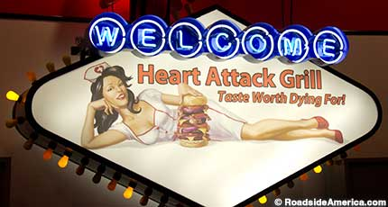
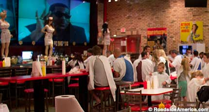

Last Heart Attack Grill Closes: Cardiologists Mourn

To call the Heart Attack Grill a “chain restaurant” would be generous; there were only ever four of them. But for 21 years at least one was open, offering diners the chance to die with a mouthful of fat and a distended belly. That opportunity now has been lost; the last HAG closed, in Las Vegas, on May 18, 2026.
The menu was a smorgasbord of gastronomic horrors, including Flatliner Fries (cooked in pure lard), milkshakes infused with butterfat, and the restaurant’s signature Quadruple Bypass Burger (10,000 calories). Customers who weighed more than 350 pounds got to eat free. Several diners were ambulanced off, and the restaurant’s spokesman, Blair River, died from obesity (he weighed 575 pounds).
Oddly, the risk of eating and collapsing at Heart Attack Grill wasn’t what finally shut the place down. A press release from its owner, “Doctor” Jon Basso, instead blamed “corporate greed” in Las Vegas, which he said was a city that would rather peddle “forty-dollar artisanal avocado toast” than the Grill’s hearty, heavy-duty menu.

Basso was nevertheless optimistic that Heart Attack Grill would rise again in some more honest, high-calorie community, and was proud of what it had accomplished. “The obesity rate has risen from 30 percent since we opened in 2005 to the nearly 45 percent today,” he wrote, “and we pat ourselves on the back for leading the charge.”